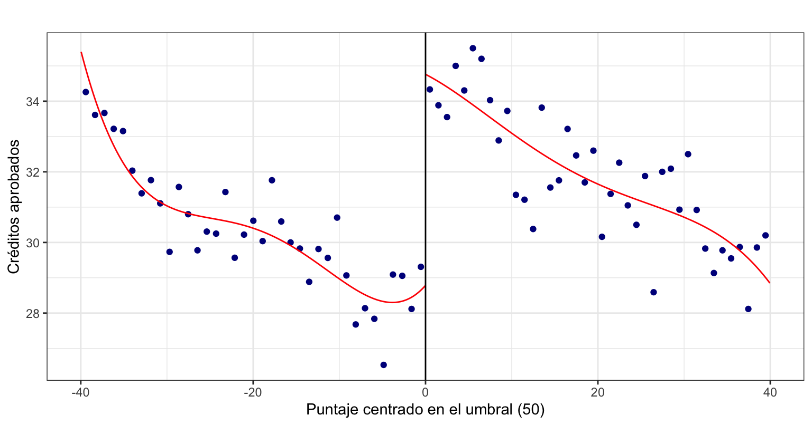

library(tidyverse)
library(estimatr)
library(rdrobust)
library(rddensity)
datos <- read_csv("datos/beca_puntaje.csv", show_col_types = FALSE)Tarea 2: Regresión discontinua — Respuestas
Práctica · un programa de becas de estudio
Esta es la clave de respuestas de la Tarea 2. Cada bloque trae la solución y, debajo, un comentario con los números. Los valores salen con la semilla de los datos; si corriste la tarea, deberías obtener lo mismo.
1 Mirar antes de estimar
1.1 Pregunta 1: comparabilidad cerca del corte
datos |>
filter(abs(puntaje_c) < 5) |>
group_by(beca) |>
summarise(across(c(promedio_secundaria, ingreso_hogar, edad, mujer), mean),
n = n())# A tibble: 2 × 6
beca promedio_secundaria ingreso_hogar edad mujer n
<dbl> <dbl> <dbl> <dbl> <dbl> <int>
1 0 7.48 380. 18.5 0.626 139
2 1 7.44 378. 18.5 0.496 133Respuesta: en la ventana de 5 puntos alrededor del corte, los dos grupos se parecen mucho: promedio de secundaria de 7,48 frente a 7,44, ingreso del hogar de 380 frente a 378, misma edad media. La proporción de mujeres se mueve un poco más (0,63 frente a 0,50), pero es la clase de fluctuación esperable en una ventana chica, con poco más de 130 estudiantes por lado; el chequeo formal de la pregunta 5 lo confirma. Lo único que cambia de golpe en el umbral es la beca: ese es el experimento que escribió la regla.
1.2 Pregunta 2: comparación ingenua vs local
# ingenua: todos los becados menos todos los no becados
mean(datos$creditos[datos$beca == 1]) - mean(datos$creditos[datos$beca == 0])[1] 1.633813# local: una ventana cerca del corte, con pendiente a cada lado
cerca <- filter(datos, abs(puntaje_c) < 15)
fit <- lm_robust(creditos ~ beca * puntaje_c, data = cerca)
round(coef(summary(fit))["beca", 1:4], 3) Estimate Std. Error t value Pr(>|t|)
6.992 0.710 9.851 0.000 Respuesta: la comparación ingenua da apenas +1,63 créditos; la local, ≈ +7. Acá lo interesante es que la ingenua esconde el efecto, al revés de lo que suele pasar. La razón es la dirección de la pendiente: los becados son los más vulnerables (puntaje alto), y esos estudiantes aprueban menos créditos por otras razones. Esa tendencia de fondo empuja hacia abajo el promedio de los becados y casi cancela el salto que produce la beca. La regresión local descuenta la pendiente y deja ver el efecto limpio. Moraleja: la comparación ingenua puede exagerar o tapar el efecto según hacia dónde vaya la tendencia; siempre hay que estimar localmente.
1.3 Pregunta 3: el salto con rdplot y rdrobust
rdplot(datos$creditos, datos$puntaje_c,
x.label = "Puntaje centrado en el umbral (50)",
y.label = "Créditos aprobados", title = "")
rd <- rdrobust(datos$creditos, datos$puntaje_c)
summary(rd)Call: rdrobust
Sharp RD estimates using local polynomial regression.
Number of Obs. 2000
BW type mserd
Kernel Triangular
VCE method NN
Left Right
Number of Obs. 993 1007
Eff. Number of Obs. 245 223
Order est. (p) 1 1
Order bias (q) 2 2
BW est. (h) 8.686 8.686
BW bias (b) 16.027 16.027
rho (h/b) 0.542 0.542
Unique Obs. 882 900
=====================================================================
Point Robust Inference
Estimate z P>|z| [ 95% C.I. ]
---------------------------------------------------------------------
RD Effect 5.201 4.225 0.000 [2.548 , 6.958]
=====================================================================Respuesta: el gráfico muestra un escalón hacia arriba justo en el corte. rdrobust lo cuantifica: el efecto local es de ≈ 5,2 créditos, con un intervalo robusto que no incluye el cero (\(p < 0{,}001\)), y un ancho de banda óptimo de ≈ 8,7 puntos a cada lado. La beca hace que los estudiantes aprueben unos cinco créditos más en el primer año. La fila “Robust” es la que se reporta, porque corrige el sesgo de los bordes.
2 Chequear que el diseño se sostiene
2.1 Pregunta 4: ¿alguien manipuló el puntaje?
dens <- rddensity(datos$puntaje_c)
round(c(T = dens$test$t_jk, p = dens$test$p_jk), 3) T p
-0.405 0.686 Respuesta: el test da \(p = 0{,}69\): no hay salto en la densidad del puntaje en el umbral. No aparece el amontonamiento que esperaríamos si los estudiantes hubieran acomodado su número para cruzar el corte y conseguir la beca. El supuesto de no manipulación se sostiene, que es justo lo que queríamos ver (un \(p\) alto es buena noticia).
2.2 Pregunta 5: balance en covariables
b_prom <- rdrobust(datos$promedio_secundaria, datos$puntaje_c)
b_ing <- rdrobust(datos$ingreso_hogar, datos$puntaje_c)
data.frame(
variable = c("promedio_secundaria", "ingreso_hogar"),
salto = round(c(b_prom$coef[1], b_ing$coef[1]), 3),
p_valor = round(c(b_prom$pv[1], b_ing$pv[1]), 3)
) variable salto p_valor
1 promedio_secundaria 0.144 0.468
2 ingreso_hogar 11.034 0.217Respuesta: ninguna covariable previa salta en el umbral: el promedio de secundaria tiene un salto de 0,14 (\(p = 0{,}47\)) y el ingreso del hogar de 11 (\(p = 0{,}22\)), los dos no significativos. Los grupos son comparables de entrada, como pide el diseño. Si una de estas variables hubiera saltado, sospecharíamos que algo más cambia en el corte y el efecto sobre los créditos dejaría de ser creíble.
2.3 Pregunta 6: corte placebo y ancho de banda
# corte falso donde la regla no cambia nada
rdrobust(datos$creditos, datos$puntaje_c, c = -20)$pv[1][1] 0.6699422# el efecto verdadero con varios anchos de banda fijos
sapply(c(5, 10, 15, 20), function(h) {
m <- rdrobust(datos$creditos, datos$puntaje_c, h = h)
round(m$coef[1], 2)
})[1] 5.78 5.37 6.50 6.75Respuesta: los dos chequeos pasan. En el corte inventado en −20 no aparece ningún efecto (\(p = 0{,}67\)): el salto vive sólo en el umbral verdadero. Y al variar el ancho de banda, el efecto se queda estable, entre ≈ 5,4 y ≈ 6,8 créditos según la ventana, sin cambiar de signo ni desaparecer. Un resultado creíble no depende de una ventana afortunada, y este aguanta.
3 Interpretar
3.1 Pregunta 7: el segundo resultado y el alcance del efecto
rdrobust(datos$permanencia, datos$puntaje_c) |> summary()Call: rdrobust
Sharp RD estimates using local polynomial regression.
Number of Obs. 2000
BW type mserd
Kernel Triangular
VCE method NN
Left Right
Number of Obs. 993 1007
Eff. Number of Obs. 355 311
Order est. (p) 1 1
Order bias (q) 2 2
BW est. (h) 12.707 12.707
BW bias (b) 19.725 19.725
rho (h/b) 0.644 0.644
Unique Obs. 882 900
=====================================================================
Point Robust Inference
Estimate z P>|z| [ 95% C.I. ]
---------------------------------------------------------------------
RD Effect 0.358 4.250 0.000 [0.201 , 0.545]
=====================================================================Respuesta: la beca también sube la permanencia: el salto en la probabilidad de seguir matriculado es de ≈ 0,36 (\(p < 0{,}001\)). Cerca del corte, pasar de no tener beca a tenerla mejora bastante la chance de continuar los estudios.
Sobre el alcance: el RDD estima el efecto local, para los estudiantes con puntaje cercano a 50. No dice qué pasaría con un estudiante de puntaje 20 (poco vulnerable) o de puntaje 85 (muy vulnerable), porque esos están lejos del umbral y no se parecen a los del borde. A quien diseña el programa le diría que el número es sólido justo donde la política decide hoy (mover un poco el corte), pero que extender la beca a grupos con puntajes muy distintos es una extrapolación: podría rendir más o menos, y para saberlo habría que estudiar esos tramos, idealmente con otro umbral o con un experimento. El RDD es fuerte en credibilidad y angosto en alcance; conviene ser honesto sobre las dos cosas.